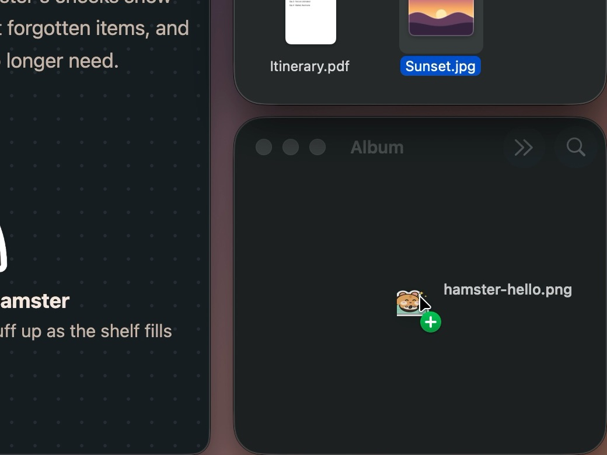
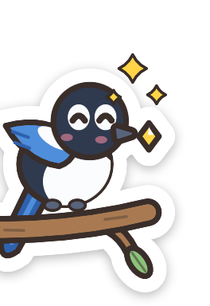

Geef het aan de kat. Pak het later terug.
PawShelf is een plank voor je Mac. Een klein figuurtje gluurt om de rand van je scherm en bewaart bestanden, mappen, afbeeldingen, links en tekst terwijl je tussen apps wisselt.
Binnenkort in de Mac App Store
Voor macOS 14 of nieuwer, op Macs met Apple silicon en Intel.
Zo werkt het

Zet het op de tab
Sleep van alles naar het figuurtje aan de rand van je scherm. Ver van de rand? Schud tijdens het slepen met de aanwijzer en de plank gaat er vlak naast open.

Ga gewoon door
Wissel van app, Space of schermvullend venster. De tab blijft aan de rand en je onderdelen zijn er na een herstart nog steeds.

Sleep het eruit
Zet onderdelen neer in de Finder, Mail, een chat of een uploadformulier. Selecteer er meerdere om ze samen eruit te slepen.
Kies wie op je spullen past
Twaalf figuurtjes, elk met een eigen manier om dingen te bewaren. Sommige gewoontes doen echt werk: aan de wangen van de hamster zie je hoe vol de plank is, de eekhoorn wijst je op vergeten onderdelen en het ijs van de pinguïn laat onderdelen die je niet meer nodig hebt wegsmelten.
-


Doospoes
Verstopt je spullen in een kartonnen doos
-


Wangzakhamster
Zijn wangen bollen op naarmate de plank voller raakt
-


Nootjeseekhoorn
Onthoudt vergeten eikeltjes en stelt voor om op te ruimen
-


IJspinguïn
Bewaart dingen op ijs tot ze wegsmelten
-


Nachtuil
's Nachts klaarwakker, overdag slaperig
-


Glinsterekster
Verzamelt glimmende links en afbeeldingen
-


Apporteerhond
Brengt je spullen terug wanneer je ze nodig hebt
-


Buidelkangoeroe
Bewaart dingen veilig in zijn buidel
-


Pelikaan
Opent zijn grote snavel om neergezette dingen op te vangen
-


Grijpgrage octopus
Houdt in elke arm één ding vast
-


Graafmol
Bewaart dingen in zijn hol
-


Schuilschildpad
Bewaart dingen veilig onder zijn schild
Wijs een sticker aan om hallo te zeggen.
Alles wat een plank moet kunnen
Klembordgeschiedenis
Je laatste 50 kopieën liggen direct op de plank. Kopieën die wachtwoordbeheerders als privé markeren, worden nooit bewaard.
Nieuwe bestanden verzamelen
Kies een map zoals Schermafbeeldingen of Downloads, en nieuwe bestanden komen vanzelf op de plank.
Zoeken in afbeeldingen
Vind een schermafbeelding aan de woorden die erin staan. De tekst wordt op je Mac herkend.
Titels en symbolen van links
Links tonen de titel en het symbool van de pagina, niet alleen een adres.
Recent verwijderd
Per ongeluk iets verwijderd? Haal het terug via het ⋯-menu van de plank.
Voorvertoning en delen
Druk op de spatiebalk voor Snelle weergave of stuur onderdelen met AirDrop en Berichten.
Collecties
Groepeer bij elkaar horende onderdelen in collecties en toon er één tegelijk.
Op elke Space
De tab volgt je naar elke Space en ligt boven schermvullende apps, aan de linker- of rechterrand.
Klaar voor VoiceOver
Elke knop en elk onderdeel op de plank heeft een VoiceOver-label.
Niets toe te staan in Systeeminstellingen
PawShelf vraagt niet om toegang tot Toegankelijkheid of Schermopname. Het draait in de App Sandbox en opent alleen wat jij het geeft. Wat je op de plank legt, blijft op je Mac.